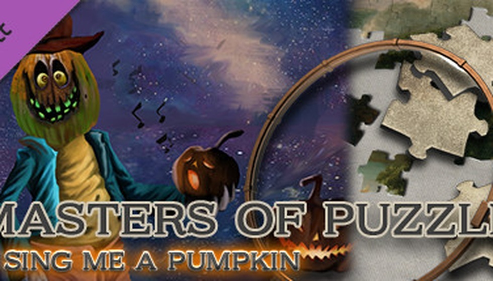

900小时老玩家坦言：《群星》成功靠“抄袭”
最近P社玩家圈子里，“群星是不是P社亲儿子”这个话题又吵翻了天。但很多人不知道的是，《群星》里那个让咱们通宵达旦的“终局天灾”玩法，其实早在70年代，就被桌游棋盘预言了。今天不聊P社那些复杂到爆的“财务报表模拟器”，咱们好好扒一扒那个让所有太空4X游戏都得叫一声“爸爸”的桌游活化石，看看它到底怎么把《群星》变成“缝合怪”的。
你可能不敢相信，咱们在《群星》里挑灯夜战搞的“探索、扩张、开发、征服”这套4X流程，他爷爷的爷爷居然是1975年那款叫《Stellar Conquest》的桌游。那会儿雅达利都还没普及，人家就在纸上把侦察舰、护卫舰、殖民船这些概念给定下来了。更绝的是1979年的《Starfire》，连恒星颜色决定资源丰度这种细节都写进了规则书——蓝星白星值钱，红星橙星靠后站。玩《群星》时你八成也会下意识先瞟一眼星系颜色再决定要不要派科研船？这个刻在骨子里的操作，源头就在那张泛黄的六边形棋盘上。
别急着说《群星》抄袭啊，因为在电子游戏连像素点都还凑不齐的年代，人家桌游圈早把这些套路玩透了。咱们在《群星》里被“异构FTL”搞得头大的时候，八成不知道这套花活是从《星际之剑》那直接“借”过来的。人家那游戏里不同种族赶路方式完全两码事——有的走预设航道，有的靠星系间自由蹦跶，还有的修星门搞远距离传送。《群星》1.0时代照单全收，后来2.0大改才给砍了统一成航道。至于让你半夜摔键盘的“终局天灾”，你当是P社原创？翻翻《Starfire》的官方小说剧本，里面那些银河灾难的设定跟肃正协议、虚空恶魔简直像从一个模子里刻出来的。这“拿来主义”玩得，你能说人家抄袭吗？那叫站在巨人肩膀上摘星星。
但要论起《群星》“借鉴”最彻底、影响最深远的祖师爷，那还得是《猎户座之王》（MOO）。玩《群星》时你肯定吐槽过航道堵车吧？这设定往上倒三代，得从MOO的“星系航程限制”说起。MOO初代用星系间的距离决定你能不能跳过去，到了二代把单个星系拆成多行星系统，三代才硬生生改出预设星际航道，顺带整出虫洞这玩意儿把地图拓扑搞复杂。还有那套让咱们在船坞里能泡上一下午的“模块化舰船”设计，MOO早就玩剩下了。最神的是MOO那个“势力投影”概念，直接启发了《文明3》的国界系统，然后又被《群星》拿过去做成咱们熟悉的那条颜色分明的领土线。你看，现在《群星》里每扩张一个星系，边界线自动重新划分的那一下，这套操作骨子里流淌的都是MOO的血液。
说到“跳帮战”和“微操”这事，我就替咱们国内那些从《星际争霸》转战《群星》的老哥说句话了——这年头，想痛痛快快指挥一场跳帮战，咋就这么难呢？你瞅瞅MOO2和《星际之剑》里那个“跳帮战”设计，给舰船配上陆战单位，太空激战正酣时直接贴脸登船抢对方科技、夺对方战舰，那种刀尖舔血的微操快感，想想当年星际里一波毒爆滚坦克，简直酸爽到飞起。还有舰船朝向系统，武器护盾分前后左右，开打前得琢磨侧翼接敌还是正面硬刚，这不就是太空版红警微操吗？可惜啊，到了《群星》和2016年的MOO重置版里，全给砍没了，战斗变成数值对撞。咱们这些从小靠操作为荣的国内老玩家，看着自动运算出来的战报，那股子“有力使不出”的憋屈感，比打星际被对面一波棱镜空投骚扰到死还难受。这哪是退化，这明摆着是厂商为了拥抱“休闲化”大潮，硬生生把咱们这帮爱抠细节的硬核遗老给牺牲了。
很多制作组都想让玩家当甩手掌柜，但问题是，没了微操的快感，我玩策略图个啥？图看AI演戏吗？MOO3当年就栽在这上头。制作组想让你当帝王，只做宏观战略决策，微观操作全交给AI自动化。理念听着挺先进吧？结果执行得一塌糊涂——系统搞得比前作还复杂，却把玩家的操作权给剥夺了，你只能眼睁睁看着电脑在那瞎运营，自己像个旁观者。对比后来《Distant Worlds》就聪明多了，所有子系统你可以全自动，也能全手动，想管种田就管种田，想管打仗就管打仗，自由度给足。说白了，玩家不是怕系统复杂，是怕你把我手脚捆住让我干瞪眼。MOO3这套超前理念要是搁今天让P社来打磨，说不定真能成神作，可惜生不逢时，成了反面教材。

这种复杂到令人发指的游戏生态，在国内却养活了一大批专门做“硬核讲解”的内容创作者，这就引出了一个很有意思的现象。就拿《Aurora 4X》来说吧，这玩意儿被称为太空版《矮人要塞》，全文本界面，造艘飞船得先从研究发动机透镜开始，科学家团队有不同专长，帝国军官还有详细履历和性格，生老病死拉帮结派。天体公转轨道是椭圆的，连星际航行都得算时间窗口。你在国内游戏社群里放眼望去，真正能沉下心玩进去的哥们儿凤毛麟角，但上那些动辄一两个小时的系统讲解视频，播放量高得吓人。这说明啥？说明咱们国内玩家圈有一种特殊的“叶公好龙”式硬核文化——大家热衷于研究复杂系统的运作原理，看攻略看得津津有味，但真让自己上手去面对那一堆Access数据库级别的操作界面，心里立马打退堂鼓。这种“脑补式”的游戏体验，恰恰是太空4X在国内始终小众但粉丝粘性奇高的核心矛盾：我们爱的是那种“我能搞懂这一切”的智力优越感，而不是“我得亲手操作这一切”的繁琐劳动。
说白了，P社不是做不了《星际之剑》那样的多样性，而是它想让你在《群星》里玩的根本不是打仗，而是“模拟星际政客”。群星2.0制作人换将之后，专门发过开发日志解释为啥砍掉异构FTL——那玩意儿虽然好玩，但太限制后续加内政、贸易、外交和银河议会这些系统了。为了让你能正儿八经地在“天灾降临”前搞议会投票、拉帮结派、通过法案，P社选择牺牲开局的不对称体验。站在咱们国内玩家的角度想想……你是喜欢《星际之剑》那种上来就干、种族差异大到像换了个游戏的纯粹战争体验，还是喜欢《群星》现在这套先和平种田、再进议会扯皮、最后才跟天灾死磕的慢热节奏？这买卖划不划算，每个玩家心里都有杆秤。但不可否认的是，从“异构FTL”到统一航道，《群星》确实从一个更硬核的战争模拟器，变成了一款更大众化的“银河政治模拟器”。
下次再有人吹《群星》或者骂《群星》，不妨先回头看看那些泛黄的桌游规则书。从1975年桌上那几张简陋的六边形地图，到今天电脑屏幕上绚丽的银河帝国，变的只是载体，不变的是人类对“探索未知、扩张版图”的原始冲动。无论是《群星》还是《猎户座之王》，它们都是那条漫长游戏进化链上的一环。即使AI时代来临，游戏设计最核心的“玩法乐趣”依然源自人类的智慧与试错。希望看完这篇文章，下次你在《群星》里被航道堵得骂娘时，能想起那些在纸张上掷骰子的老家伙们——咱们今天玩到的快乐，都是站在他们肩膀上得来的。话说回来，你在《群星》里最讨厌的设计是什么？是2.0改版后的航道，还是那些动不动就堵路的外星人？评论区咱们Battle一下！
关于我们
📱 公众号名称：三天游戏
✍️ 作者：曾三天
扫码关注公众号，获取每日最新资讯

商务合作与版权
商务合作 / 内容投稿 / 品牌推广
请关注公众号「三天游戏」后台留言联系
版权声明：本文由作者整理，转载需注明出处。